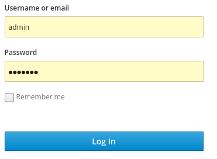
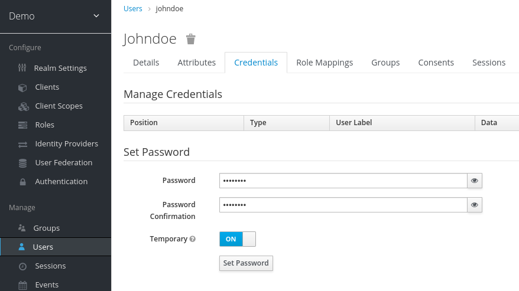
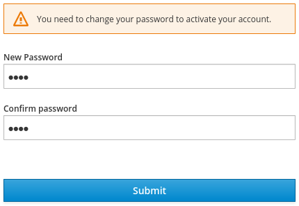
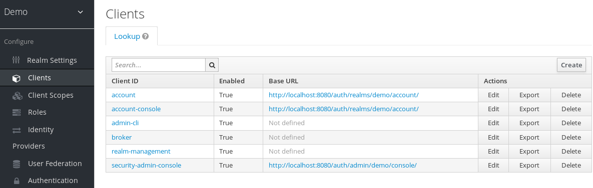
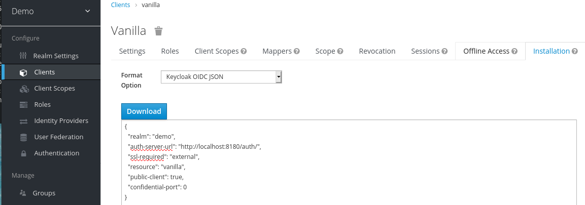
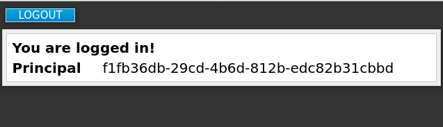

Getting Started Guide
For Use with Red Hat Single Sign-On 7.4
Abstract
Chapter 1. Installing a sample instance of Red Hat Single Sign-On
This section describes how to install and start a Red Hat Single Sign-On server in standalone mode, set up the initial admin user, and log in to the Red Hat Single Sign-On Admin Console.
Additional Resources
This installation is intended for practice use of Red Hat Single Sign-On. For instructions on installation in a production environment and full details on all product features, see the other guides in the Red Hat Single Sign-On documentation.
1.1. Installing the Red Hat Single Sign-On server
For this sample instance of Red Hat Single Sign-On, this procedure involves installation in standalone mode. The server download ZIP file contains the scripts and binaries to run the Red Hat Single Sign-On server. You can install the server on Linux or Windows.
Procedure
- Go to the Red Hat customer portal.
- Download the Red Hat Single Sign-On Server: rh-sso-7.4.zip
- Place the file in a directory you choose.
Unpack the ZIP file using the appropriate
unziputility, such as unzip, tar, or Expand-Archive.Linux/Unix
$ unzip rhsso-7.4.zip or $ tar -xvzf rh-sso-7.4.tar.gz
Windows
> Expand-Archive -Path 'C:Downloads\rhsso-7.4.zip` -DestinationPath 'C:\Downloads'
1.2. Starting the Red Hat Single Sign-On server
You start the server on the system where you installed it.
Prerequisites
- You saw no errors during the Red Hat Single Sign-On server installation.
Procedure
-
Go to the
bindirectory of the server distribution. Run the
standaloneboot script.Linux/Unix
$ cd bin $ ./standalone.sh
Windows
> ...\bin\standalone.bat
1.3. Creating the admin account
Before you can use Red Hat Single Sign-On, you need to create an admin account which you use to log in to the Red Hat Single Sign-On admin console.
Prerequisites
- You saw no errors when you started the Red Hat Single Sign-On server.
Procedure
Open http://localhost:8080/auth in your web browser.
The welcome page opens, confirming that the server is running.
Welcome page

- Enter a username and password to create an initial admin user.
1.4. Logging into the admin console
After you create the initial admin account, you can log in to the admin console. In this console, you add users and register applications to be secured by Red Hat Single Sign-On.
Prerequisites
- You have an admin account for the admin console.
Procedure
Click the Administration Console link on the Welcome page or go directly to http://localhost:8080/auth/admin/ (the console URL).
NoteThe Administration Console is generally referred to as the admin console for short in Red Hat Single Sign-On documentation.
Enter the username and password you created on the Welcome page to open the admin console.
Admin console login screen

The initial screen for the admin console appears.
Admin console
Next steps
Now that you can log into the admin console, you can begin creating realms where administrators can create users and give them access to applications. For more details, see Creating a realm and a user.
Chapter 2. Creating a realm and a user
The first use of the Red Hat Single Sign-On admin console is to create a realm and create a user in that realm. You use that user to log in to your new realm and visit the built-in account console, to which all users have access.
2.1. Realms and users
When you log in to the admin console, you work in a realm, which is a space where you manage objects. Two types of realms exist:
-
Master realm- This realm was created for you when you first started Red Hat Single Sign-On. It contains the admin account you created at the first login. You use this realm only to create other realms. -
Other realms- These realms are created by the admin in the master realm. In these realms, administrators create users and applications. The applications are owned by the users.

2.2. Creating a realm
As the admin in the master realm, you create the realms where administrators create users and applications.
Prerequisites
- Red Hat Single Sign-On is installed.
- You have the initial admin account for the admin console.
Procedure
- Go to http://localhost:8080/auth/admin/ and log in to the Red Hat Single Sign-On admin console using the admin account.
- From the Master menu, click Add Realm. When you are logged in to the master realm, this menu lists all other realms.
Type
demoin the Name field.A new realm
NoteThe realm name is case-sensitive, so make note of the case that you use.
Click Create.
The main admin console page opens with realm set to
demo.Demo realm
-
Switch between managing the
masterrealm and the realm you just created by clicking entries in the Select realm drop-down list.
2.3. Creating a user
In the demo realm, you create a new user and a temporary password for that new user.
Procedure
- From the menu, click Users to open the user list page.
- On the right side of the empty user list, click Add User to open the Add user page.
Enter a name in the
Usernamefield.This is the only required field.
Add user page
Flip the Email Verified switch to On and click Save.
The management page for the new user opens.
- Click the Credentials tab to set a temporary password for the new user.
- Type a new password and confirm it.
Click Set Password to set the user password to the new one you specified.
Manage Credentials page

NoteThis password is temporary and the user will be required to change it at the first login. If you prefer to create a password that is persistent, flip the Temporary switch to Off and click Set Password.
2.4. Logging into the Account Console
Every user in a realm has access to the account console. You use this console to update your profile information and change your credentials. You can now test logging in with that user in the realm that you created.
Procedure
- Log out of the admin console by opening the user menu and selecting Sign Out.
-
Go to http://localhost:8080/auth/realms/demo/account and log in to your
demorealm as the user that you just created. When you are asked to supply a new password, enter a password that you can remember.
Update password

The account console opens for this user.
Account console
- Complete the required fields with any values to test using this page.
Next steps
You are now ready for the final procedure, which is to secure a sample application that runs on JBoss EAP. See Securing a sample application.
Chapter 3. Securing a sample application
Now that you have an admin account, a realm, and a user, you can use Red Hat Single Sign-On to secure a sample JBoss EAP servlet application. You install a JBoss EAP client adapter, register the application in the admin console, modify the JBoss EAP instance to work with Red Hat Single Sign-On, and use Red Hat Single Sign-On with some sample code to secure the application.
Prerequisites
- You need to adjust the port used by Red Hat Single Sign-On to avoid port conflicts with JBoss EAP.
3.1. Adjusting the port used by Red Hat Single Sign-On
The instructions in this guide apply to running JBoss EAP on the same machine as the Red Hat Single Sign-On server. In this situation, even though JBoss EAP is bundled with Red Hat Single Sign-On, you cannot use JBoss EAP as an application container. You must run a separate JBoss EAP instance for your servlet application.
To avoid port conflicts, you need different ports to run Red Hat Single Sign-On and JBoss EAP.
Prerequisites
- You have an admin account for the admin console.
- You created a demo realm.
- You created a user in the demo realm.
Procedure
- Download JBoss EAP 7.3 from the Red Hat customer portal.
Unzip the downloaded JBoss EAP.
$ unzip <filename>.zip
- Change to the Red Hat Single Sign-On root directory.
Start the Red Hat Single Sign-On server by supplying a value for the
jboss.socket.binding.port-offsetsystem property. This value is added to the base value of every port opened by the Red Hat Single Sign-On server. In this example, 100 is the value.Linux/Unix
$ cd bin $ ./standalone.sh -Djboss.socket.binding.port-offset=100
Windows
> ...\bin\standalone.bat -Djboss.socket.binding.port-offset=100
Confirm that the Red Hat Single Sign-On server is running. Go to http://localhost:8180/auth/admin/ .
If the admin console opens, you are ready to install a client adapter that enables JBoss EAP to work with Red Hat Single Sign-On.
3.2. Installing the JBoss EAP client adapter
When JBoss EAP and Red Hat Single Sign-On are installed on the same machine, JBoss EAP requires some modification. To make this modification, you install a Red Hat Single Sign-On client adapter.
Prerequisites
- JBoss EAP is installed.
-
You have a backup of the
../standalone/configuration/standalone.xmlfile if you have customized this file.
Procedure
- Download the Client Adapter for EAP 7 from the Red Hat customer portal.
- Change to the root directory of JBoss EAP.
Unzip the downloaded client adapter in this directory. For example:
$ unzip <filename>.zip
Change to the bin directory.
$ cd bin
Run the appropriate script for your platform.
NoteIf you receive a
file not found, make sure that you usedunzipin the previous step. This method of extraction installs the files in the right place.Linux/Unix
$ ./jboss-cli.sh --file=adapter-elytron-install-offline.cli
Windows
> jboss-cli.bat --file=adapter-elytron-install-offline.cli
NoteThis script makes the necessary edits to the
…/standalone/configuration/standalone.xmlfile.Start the application server.
Linux/Unix
$ ./standalone.sh
Windows
> ...\standalone.bat
3.3. Registering the JBoss EAP application
You can now define and register the client in the Red Hat Single Sign-On admin console.
Prerequisites
- You installed a client adapter to work with JBoss EAP.
Procedure
- Log in to the admin console with your admin account: http://localhost:8180/auth/admin/
-
In the top left drop-down list, select the
Demorealm. Click
Clientsin the left side menu to open the Clients page.Clients

- On the right side, click Create.
On the Add Client dialog, create a client called vanilla by completing the fields as shown below:
Add Client
- Click Save.
- On the Vanilla client page that appears, click the Installation tab.
Select Keycloak OIDC JSON to generate a file that you need in a later procedure.
Keycloak.json file

- Click Download to save Keycloak.json in a location that you can find later.
Select Keycloak OIDC JBoss Subsystem XML to generate an XML template.
Template XML
- Click Download to save a copy for use in the next procedure, which involves JBoss EAP configuration.
3.4. Modifying the JBoss EAP instance
The JBoss EAP servlet application requires additional configuration before it is secured by Red Hat Single Sign-On.
Prerequisites
- You created a client named vanilla in the demo realm.
- You saved a template XML file for this client.
Procedure
-
Go to the
standalone/configurationdirectory in your JBoss EAP root directory. Open the
standalone.xmlfile and search for the following text:<subsystem xmlns="urn:jboss:domain:keycloak:1.1"/>
Change the XML entry from self-closing to using a pair of opening and closing tags as shown here:
<subsystem xmlns="urn:jboss:domain:keycloak:1.1"> </subsystem>
Paste the contents of the XML template within the
<subsystem>element, as shown in this example:<subsystem xmlns="urn:jboss:domain:keycloak:1.1"> <secure-deployment name="WAR MODULE NAME.war"> <realm>demo</realm> <auth-server-url>http://localhost:8180/auth</auth-server-url> <public-client>true</public-client> <ssl-required>EXTERNAL</ssl-required> <resource>vanilla</resource> </secure-deployment> </subsystem>Change
WAR MODULE NAME.wartovanilla.war:<subsystem xmlns="urn:jboss:domain:keycloak:1.1"> <secure-deployment name="vanilla.war"> ... </subsystem>
- Reboot the application server.
3.5. Installing sample code to secure the application
The final procedure is to make this application secure by installing some sample code from the https://github.com/redhat-developer/redhat-sso-quickstarts repository. The quickstarts work with the most recent Red Hat Single Sign-On release.
The sample code is the app-profile-jee-vanilla quickstart. It demonstrates how to change a JavaEE application that is secured with basic authentication without changing the WAR. The Red Hat Single Sign-On client adapter subsystem changes the authentication method and injects the configuration.
Prerequisites
You have the following installed on your machine and available in your PATH.
- Java JDK 8
- Apache Maven 3.1.1 or higher
- Git
You have a keycloak.json file.
Procedure
- Make sure your JBoss EAP application server is started.
Download the code and change directories using the following commands.
$ git clone https://github.com/redhat-developer/redhat-sso-quickstarts $ cd redhat-sso-quickstarts/app-profile-jee-vanilla/config
-
Copy the
keycloak.jsonfile to the current directory. -
Move one level up to the
app-profile-jee-vanilladirectory. Install the code using the following command.
$ mvn clean wildfly:deploy
Confirm that the application installationt succeeded. Go to http://localhost:8080/vanilla where a login page is displayed.
Login page confirming success
Log in using the account that you created in the demo realm.
Login page to demo realm
A message appears indicating you have completed a successful use of Red Hat Single Sign-On to protect a sample JBoss EAP application. Congratulations!
Complete success
